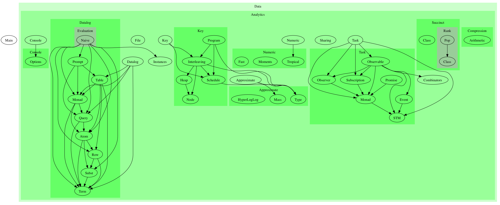
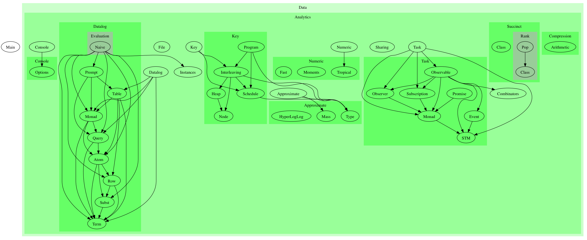

analytics-0.1: A work in progress analytics engine for Haskell
A work in progress analytics engine for Haskell
https://github.com/analytics/analytics/tree/master/examples

Modules
- Data
- Analytics
analytics-0.1: A work in progress analytics engine for Haskell
A work in progress analytics engine for Haskell
https://github.com/analytics/analytics/tree/master/examples

Modules